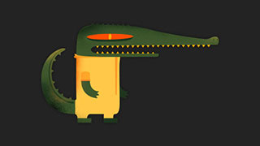
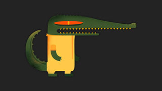

jquery 3d Carousel轮播图插件 jQuery Waterwheel Carousel Plugin
Carousel Demo

 

前一幅 下一幅
Set Options
You can set new options for the carousel here. Once you are satisified with the appearance of the carousel, just copy and paste the options into your own implementation.
{
flankingItems: 3,
movingToCenter: function ($item) {
$('#callback-output').prepend('movingToCenter: ' + $item.attr('id') + '
');
},
movedToCenter: function ($item) {
$('#callback-output').prepend('movedToCenter: ' + $item.attr('id') + '
');
},
movingFromCenter: function ($item) {
$('#callback-output').prepend('movingFromCenter: ' + $item.attr('id') + '
');
},
movedFromCenter: function ($item) {
$('#callback-output').prepend('movedFromCenter: ' + $item.attr('id') + '
');
},
clickedCenter: function ($item) {
$('#callback-output').prepend('clickedCenter: ' + $item.attr('id') + '
');
}
}
Reload New Options